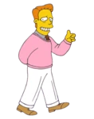
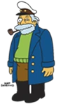

Curiosidades
Personajes principales
| Homero Simpsons |
Marge Simpsons |
Bart Simpsons |
Lisa Simpsons |
 |
 |
 |
 |
Personajes Secundarios
| Troy McClure |
McCallister |
Disco Stu |
Duffman |
|  |
 |
 |
|
Reparto Latinoamerica
| Humberto Vélez |
Nancy Mckenzie |
Marina Huerta |
Patricia Acevedo |
 |
 |
 |
 |
| Homero Simpsons |
Marge Simpsons |
Bart Simpsons |
Lisa Simpsons |
Traducciones
Personajes
En el doblaje de la serie muchos nombres de los personajes y lugares, además de algunas frases fueron traducidos al español, un ejemplo es "Homer" que en el doblaje fue traducido a "Homero". Algunos a partir de ciertas temporadas se dejaron de traducir conservando sus nombres originales en inglés, un ejemplo "Chalmers" fue traducido a Archundia, pero temporadas después se dejó de traducir el apellido. Lo siguiente es una lista de los nombres, de izquierda a derecha son los nombres en inglés y español:
- Homer Jay Simpson - Homero Simpson. En un episodio su segundo nombre fue traducido de "Jay" a "Jimeno".
- Bartholomew Jo-jo "Bart" Simpson - Bartolomeo J. Simpson.
- Santa's Little Helper - "El Enviado de Santa Claus" en su debut ("Especial de Navidad" de la 1ª temporada). "Huesos" desde la 2ª hasta la 7ª temporada; pero en "La canción de Skinner" (5ª temporada), Bart aclara que ese sólo es su apodo y su nombre real es "Ayudante de Santa Claus". A partir de la 8ª temporada, le llaman "Ayudante de Santa" consistentemente.
- Abraham Simpson - Durante todas las temporadas se mantuvo su nombre (Abraham, a veces pronunciado Abrahán) y apodo (Abe) originales, salvo en un episodio en el que se lo llamó Abel.
- Chief Clancy Wiggum - Jefe Górgory, excepto en el episodio "La odisea de Homero", donde se dejó su apellido original, en el episodio "El cuarteto de Homero" el nombre de Clancy fue llamado Higinio y en "Bart de noche" fue llamado Celso.
Grupos musicales
- The Be Sharps - Los Borbotones.
- Party Posse - La Banda de Luxo.
- Sadgams - Sadgasmo
Lugares
- Kwik-E-Mart - El Mini Super, hasta la 19ª temporada cuando se empezó a usar el nombre original.
- Moe's Tavern - La Taberna de Moe, en algunos episodios llamado "El bar de Moe".
- Kamp Krusty - Campo Krusty, en su aparición en el episodio del mismo nombre de la 4ª temporada y Campamento Krusty, en su aparición en el episodio "El Campamento de Krusty" de la 28ª temporada.
Frases
- Eat my shorts! - En las primeras temporadas la frase de Bart era traducida como ¡Vete al diablo!, después ¡Tírase a un pozo! y luego ¡Come calzón! en el episodio "El Sax de Lisa" de la 9ª temporada. Sin embargo, a partir de las siguientes temporadas se dejó su traducción literaria ¡Cómete mis pantaloncillos!.
Referencias
Referencias al doblaje
En la serie, Humberto Vélez se mencionó en la serie, usando su nombre como alias para Homero (cosa que no se dice en la versión en inglés):
- En el episodio Bart recorre el mundo cuando Lisa le dice a Homero que le gustaba Lalo Landa (Langdon Alger, en su versión original en inglés), al preguntarle a Homero quien era éste responde: ¿Beto Vélez? refiriéndose a Humberto Vélez, quien lo doblaba. En inglés, se refería a Larson.
- En el episodio Gorgorito cuando Homero estaba grabando un mensaje para su teléfono, dice: "Hola, habla Beto Vélez; venga el mensaje ¡venga el mensaje!" haciendo nuevamente referencia a Vélez. En inglés, se refería a Jerry Maguire, personaje de la película del mismo nombre, interpretado por Tom Cruise.
También ha sido notoria la mención de actores de doblaje diversos en la serie (que tampoco se dice en la versión en inglés):
- En el episodio Monty no puede comprar mi amor , el Sr. Burns presenta al monstruo del Lago Ness como la novena maravilla del mundo, señalando que la octava fue la voz del Tata Arvizu, refiriéndose a Jorge Arvizu, actor pionero en el doblaje mexicano. En inglés, se refería a Gomer Pyle, personaje interpretado por Jim Nabors, quien fue introducido en la mitad de la tercera temporada de El show de Andy Griffith.
- En el episodio 22 peliculas cortas sobre Springfield varios actores realizaron 2 papeles dentro de este mismo capitulo como ejemplos Gabriel Chávez hizo a Burns y al papa de Millhouse, Federico Romano hizo al superintendente Chalmers y al Señor Alto que persigue a Nelson y también Alejandro Mayen que hace a Lou y al peluquero que atiende a Lisa.
- En el episodio Bart se enamora vuelve a aparecer el personaje de Rainier Wolfcastle quien es el papá de Greta en este capítulo, esta vez interpretado por el gran actor Juan Alfonso Carralero y en un diálogo menciona que el fue la voz de Will Smith en El Príncipe del Rap, incluso hizo la voz que el señor Carralero le puso en la serie de los 90s.
- El empleado que se jubila en la planta, al que luego reemplaza Marge en el episodio Marge consigue empleo fue llamado en español "Carlos Magaña". En inglés, se llama Jack Marley.
- En el episodio Homie, el payaso, Tony, el gordo dice: "Vamos por parque con Federico Romano". En inglés, Tony, el gordo dice: "Let's go to Big 5" ("Vamos al Big 5"); siendo ésta una tienda americana de artículos deportivos, que ofrece munición para rifles de caza.
Referencias Culturales
- En el episodio "El Cuarteto de Homero" cuando cuenta la historia de su grupo musical menciona al conductor Paco Buengesto haciendo referencia al animador y locutor mexicano Paco Malgesto.
- En los episodios "Hijos de segunda clase", "Bart contra Lisa contra el tercer año", "Jefe de corazones", "Postales de la controversia" y "La Casita del Horror XXV", así como en un gag del sofá de la temporada 15 se hace referencia o se menciona a Pokémon. Curiosamente, las primeras temporadas de este anime fueron dobladas en Audiomaster, mismo estudio que dobló las primeras 14 temporadas de Los Simpson.
- En ese mismo episodio cuando Moe esta vendiendo sus ostras menciona que tienen el rostro de Verónica Méndez y Lucia Castro haciendo referencia a las actrices Lucia Méndez y Verónica Castro solo que combinando sus nombres.
- En el capítulo "Springfield prospero o el problema del juego" Kent Brockman menciona el nombre del conductor de noticias como Abraham en ingles se llama Scott Christian, probablemente es una referencia al periodista mexicano Abraham Zabludovsky.
- En dos episodios de la decíma temporada se hace referencia a Juan Ramón Palacios (hermano de la cantante mexicana Tatiana) y sus "Desvelados", programa que tenía en la ciudad de Monterrey, en donde Humberto Vélez conoció a Juan Ramón Palacios en una Convención de Comics.